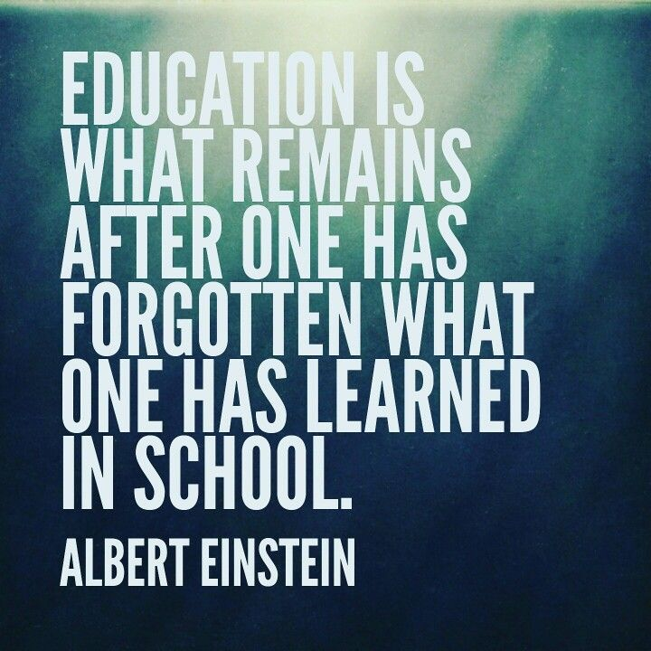

The new-age BCA with Electives integrated with Certification in CompTIA Server+ is an advanced industry-ready Bachelor of Computer Applications program offered by Jain (Deemed-to-be University). This program aims to prepare students for productive careers in the software industry by providing an excellent environment for learning the core and emerging areas of the discipline. It also provides the students, a platform to understand the concepts of Computer Applications and Technology through strong theoretical basis and practical experiments. The curriculum of this course covers all the important aspects of computer applications.
Career Enhancement programs are formulated as per current industry standards and reflect on our commitment to build a unique workforce, which will meet the challenges in the industry. Evaluation is based on internal assessment, seminars, assignments, practical and theory examination and reports prepared by the students. Our highly knowledgeable professors always make themselves available to students outside of the classroom, even beyond office hours and help the students to bring out the best in them. The faculty make it a point of connecting with their students to create a fulfilling academic experience. This allows to build a closer student-professor relationship. In Jain (Deemed-to-be University) the career enhancement program prepare the students with necessary skills and attitude such as personality development, communication skills, presentation skills, interview techniques , public speaking that keeps the students at the forefront of employability helping them to meet challenges even at a global platform.
A Bachelor of Computer Application degree with Electives from Jain (Deemed-to-be University) is committed to prepare students for their future career by giving a competitive edge in the job market. The program trains students in the key areas of computer science, such as algorithm development, structure and administration of computers, application development using multiple programming languages, information managing and handling, etc.
It will help the students to establish themselves as effective professionals and acquire the ability to adapt to a rapidly changing environment by applying new skills and technologies in their professional workspace. They will be able to address the social, technical and business challenges with their effective collaborating and innovation methodologies. This degree provides a platform for a wide range of career opportunities such as Web Developer, Web Designer, Network Administrator, System Manager, Computer Programmer, Software Developer, Software Tester, Database administrator, Research analyst etc.
